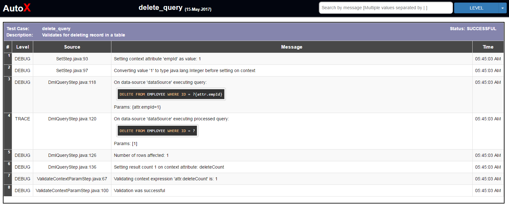
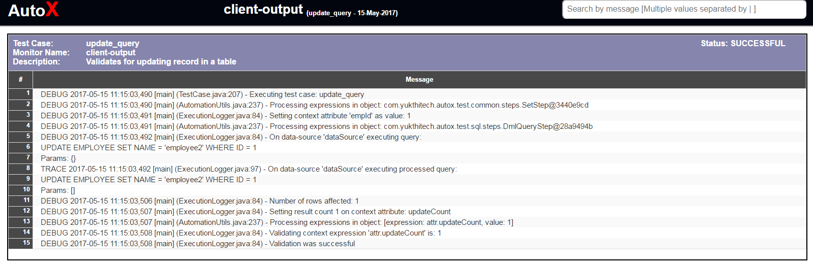
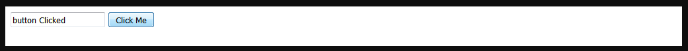
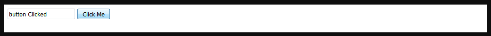

<testCase name="testForWithBreanAndContinue">
<description>Tests if for loop is working properly with break and continue</description>
<wrap:steps>
<ccg:set name="res" value=""/>
<ccg:for start="1" end="20">
<ccg:if condition="attr.loopVar % 2 != 0">
<ccg:continue/>
</ccg:if>
<ccg:set name="res" value="${attr.res}|${attr.loopVar}"/>
<ccg:if condition="attr.loopVar gte 10">
<ccg:break/>
</ccg:if>
</ccg:for>
<ccg:validateContextParam expression="attr.res" value="|2|4|6|8|10" />
</wrap:steps>
</testCase>
<ccg:invokeMultipartPost uri="/emp/saveWithFile">
<part name="details">
<value>
{
"name" : "${user.name}",
"address": "some address"
}
</value>
</part>
<attachment name="file">file:./src/test/resources/testFile.txt</attachment>
</ccg:invokeMultipartPost>
<ccg:dmlQuery dataSourceName="dataSource" countAttribute="updateCount">
<query>
UPDATE EMPLOYEE SET NAME = 'employee2' WHERE ID = ${attr.empId}
</query>
</ccg:dmlQuery>

{kind=link}
<wrap:logMonitors>
<file-log-monitor name="client-output" path="c:\automation.log"/>
<remote-log-monitor name="sdp-server-log" host="192.168.226.126" user="centos" privateKeyPath="./src/test/resources/qa.ppk" remoteFilePath="/var/log/jboss_instance-1/startup.log"/>
</wrap:logMonitors>

{kind=link}
<wrap:plugins>
<!-- Selenium plugin for web based automation -->
<selenium-plugin>
<base-url>#{base.url}</base-url>
<wrap:drivers>
<driver name="firefox" class-name="org.openqa.selenium.firefox.FirefoxDriver">
<system-property name="webdriver.gecko.driver">./drivers/geckodriver.exe</system-property>
</driver>
<driver name="chrome" class-name="org.openqa.selenium.chrome.ChromeDriver">
<system-property name="webdriver.chrome.driver">./drivers/chromedriver.exe</system-property>
</driver>
</wrap:drivers>
</selenium-plugin>
<!-- Db plugin for sql base steps -->
<db-plugin>
<dataSource name="dataSource" ccg:beanType="org.apache.commons.dbcp2.BasicDataSource">
<driverClassName>org.apache.derby.jdbc.EmbeddedDriver</driverClassName>
<url>jdbc:derby:#{derby.folder};create=true</url>
</dataSource>
</db-plugin>
<rest-plugin>
<baseUrl>http://localhost:8080/app/api</baseUrl>
</rest-plugin>
</wrap:plugins>
 

{kind=link}